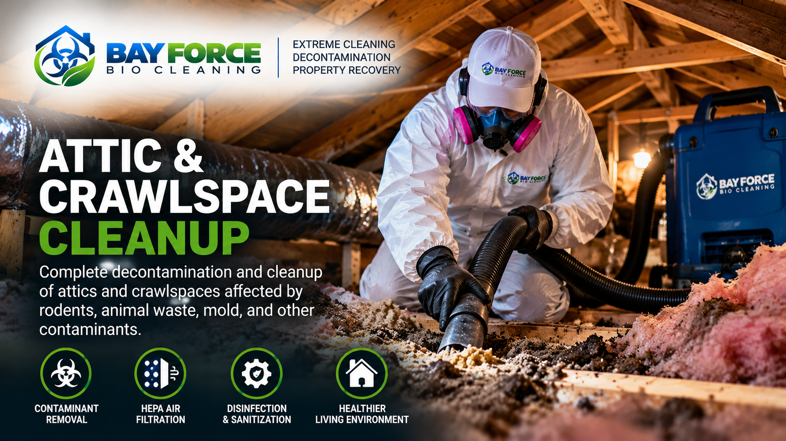

SPECIALTY CLEANING & DECONTAMINATION
Attic & Crawlspace Cleanup
Professional cleanup and decontamination for attics, crawlspaces, and difficult-access areas affected by contamination, debris, animal waste, rodent activity, odors, and heavy buildup.

OUR APPROACH
Attic & Crawlspace Cleanup May Include
Debris Cleanup
Removal of accumulated debris and contaminated materials from accessible attic and crawlspace areas.
Rodent Contamination Cleanup
Cleanup of rodent droppings, nesting materials and contaminated debris from affected areas.
Animal Waste Cleanup
Specialized cleaning of areas affected by animal waste and related contamination.
HEPA Filtration
HEPA filtration equipment may be used when appropriate to help manage airborne particles during cleanup.
Professional Decontamination
Cleaning and decontamination using professional products and procedures appropriate to the conditions encountered.
Odor Treatment
Additional odor-treatment options may be available for persistent odors in affected spaces.
THE BAY FORCE PROCESS
A Systematic Approach to Difficult-Access Areas
1. Evaluate
We evaluate accessible areas and identify the conditions requiring specialized cleanup.
2. Protect
Appropriate personal protective equipment and procedures are used based on the conditions encountered.
3. Clean & Decontaminate
Debris and contamination are addressed using appropriate professional cleaning procedures.
4. Recover
Our goal is to leave affected areas cleaner and more manageable.
SERVING THE NORTH BAY & SAN FRANCISCO
Attic & Crawlspace Cleanup Across Our Service Area
Bay Force Bio Cleaning provides specialized attic and crawlspace cleanup throughout Sonoma County, Marin County, Napa County and San Francisco.
Sonoma County • Marin County • Napa County • San Francisco
A VARCAL COMPANY
Need Help With an Attic or Crawlspace?
Tell us about the property and the conditions you are dealing with. Our team can review the information and help determine the appropriate next step.